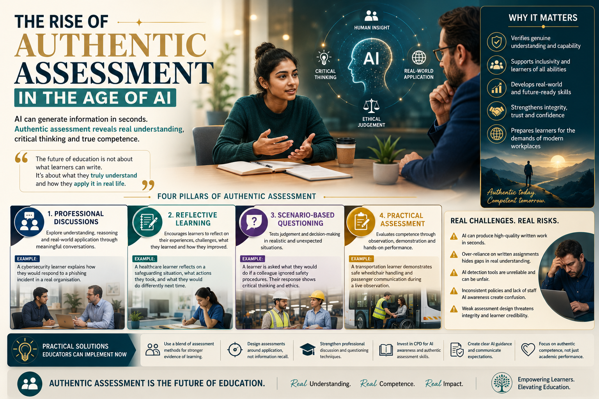

Artificial Intelligence can generate information in seconds, but authentic assessment remains essential for verifying real understanding, critical thinking, competence, and practical application of knowledge.

Artificial Intelligence is rapidly transforming education across schools, colleges, universities, and vocational training environments. Learners now have access to AI-powered tools such as ChatGPT, Microsoft Copilot, and Gemini that can generate written responses, explain concepts, summarise information, and support coursework within seconds.
While these technologies create significant opportunities for accessibility and learning support, they are also creating one of the biggest assessment challenges modern education has faced in years.
For many years, written assignments formed a major part of assessment across education. In most cases, strong written work was often treated as reliable evidence of learner competence and understanding.
However, generative AI has changed this environment dramatically.
A learner may submit a technically advanced assignment discussing cybersecurity threats, healthcare safeguarding, transportation safety, or engineering procedures. The written work may appear highly professional on paper.
However, during professional discussion or practical observation, the learner may struggle to explain how knowledge applies within realistic workplace situations.
These methods allow educators and assessors to evaluate learner understanding far more effectively than relying solely on written assignments.
Professional discussion is becoming one of the most valuable assessment methods within AI-assisted education because it allows educators to explore:
Unlike static written evidence, discussions allow assessors to ask follow-up questions, clarify understanding, and evaluate how learners think within realistic situations.
AI systems may generate information quickly, but personal reflection remains much more difficult to automate meaningfully.
Reflective learning allows educators to evaluate:
Similarly, practical observation and demonstration activities help verify whether learners can apply knowledge safely, confidently, and competently within realistic environments.
Many institutions initially believed AI detection systems would solve authenticity concerns. However, many AI detection tools remain unreliable and may produce false positives, inaccurate conclusions, and unfair outcomes.
ESOL learners, learners using grammar support tools, or learners following structured academic formats may sometimes be incorrectly flagged despite producing genuine work.
Educational providers increasingly need balanced assessment systems that combine written evidence, professional discussion, practical observation, reflective learning, scenario-based questioning, and applied assessment methods.
Educators themselves increasingly require support and training to manage these changes effectively.
Continuous Professional Development in:
is becoming increasingly important across modern education.
Artificial Intelligence will continue transforming education rapidly, but authentic assessment remains essential for protecting educational integrity, learner credibility, qualification value, and genuine human understanding.
The future of education increasingly depends on whether learners can think critically, communicate effectively, solve problems, apply knowledge responsibly, and demonstrate competence within real-life situations.